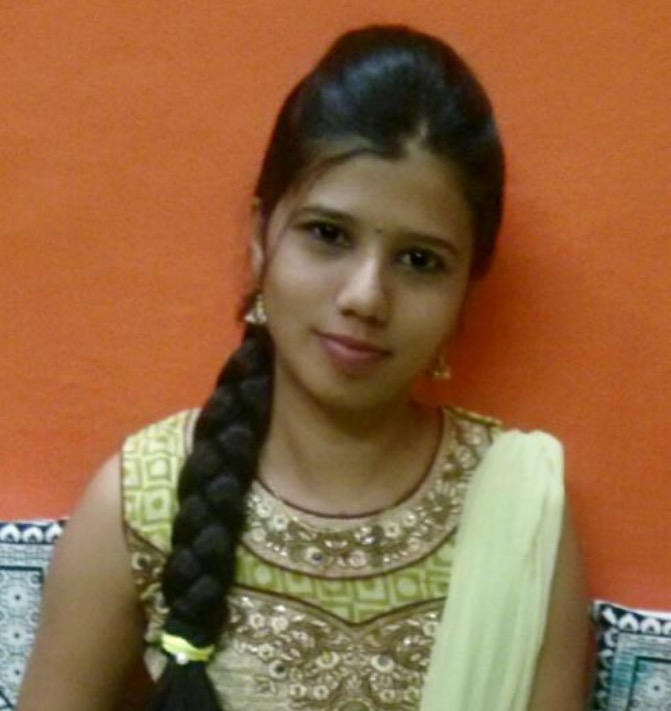

Gajanan
&
Supriya
Monday, December 5th, 2016
The Bride and Groom
Supriya
 Supriya is the youngest in the family, has one elder brother. She got bachelor degree in commerce and looking for oppurtunity in Banking sector. She simply loves to cook and try new recipes most of the time. Gajanan loves her voice as she sings so sweet. She likes Idilli sambar in breakfast, Khaju barfi in sweet and all items in chicken and mutton in non-veg !!Ganjanan
Gajanan is 4th child in family with 5 siblings, 3 elder sisters and one younger sister! He got a master degree in Computer Application and is working as a software Engineer in Wipro Technologies. He loves listening to music and adventure sports. He is very friendly and show great respect and polite to everyone. He likes chicken curry, chicken 65 , chicken lollipop and goes on ... and in Veg he likes brown lentils curry and he too has a sweet tooth.Wedding Invite
Smt. Leela Shri Chandrakanth E. Gondkar
of Belagavi
&
Solicit your gracious presence with your family & friends on the
auspious ocasion of the Marriage ceremony of our son Chi. Gajanan With Chi. Kum. Sou Supriya
D/O Smt. Shridevi Shridhar Ramachandrappa Bagade of Ranebennur Dist. Haveri
of Belagavi
&
Solicit your gracious presence with your family & friends on the
auspious ocasion of the Marriage ceremony of our son Chi. Gajanan With Chi. Kum. Sou Supriya
D/O Smt. Shridevi Shridhar Ramachandrappa Bagade of Ranebennur Dist. Haveri
MUHURATHAM
On Monday
5th December, 2016
@12-02 PM
On Monday
5th December, 2016
@12-02 PM
Venue
Vartakara Samudaya
&
Bhavan, Near railway
Station, Ranebennur
Vartakara Samudaya
&
Bhavan, Near railway
Station, Ranebennur
RECEPTION
Timing : On Wednesday 7th December, 2016 at 12:00 PM
Venue: Plot No. 7, Nagendra Colony, Khasbag, Belagavi
Timing : On Wednesday 7th December, 2016 at 12:00 PM
Venue: Plot No. 7, Nagendra Colony, Khasbag, Belagavi
With Best Compliment from
Gondkar Á Bagade Family , relatives and Friends
Gondkar Á Bagade Family , relatives and Friends
Testimonials
Maimom Kunjakishor (Kisor) : [Posted on 11/19/2016]
I can't say enough about gaju, he is always a pleasure to work with. A humble guy with warm and fuzzy personilty, always willing to help people around him. We have seen him with his popular smile all the time, no matter what ! As the impending date looms closer, I cannot help but share the joy and your nervousness and hope your life together will be filled with joy, happiness and lots of love! May you have the wedding of your dreams and the happiest of marriage!
I can't say enough about gaju, he is always a pleasure to work with. A humble guy with warm and fuzzy personilty, always willing to help people around him. We have seen him with his popular smile all the time, no matter what ! As the impending date looms closer, I cannot help but share the joy and your nervousness and hope your life together will be filled with joy, happiness and lots of love! May you have the wedding of your dreams and the happiest of marriage!
Manmeet Kaur: [Posted on 11/22/2016]
Congratulations to both of you!!!!Wishing you a long and happy marriage life..May the love you share today grow stronger as you grow old together!
Congratulations to both of you!!!!Wishing you a long and happy marriage life..May the love you share today grow stronger as you grow old together!